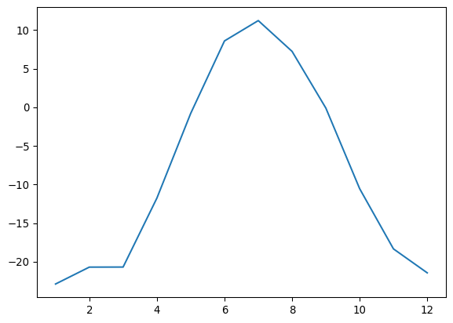

End Activity Session (Day 1) - Successfully Introduced Data Science Pipeline!
Code
import pandas as pd
import matplotlib.pyplot as plt
Toolik from the boardwalk (source)[https://media.arcus.org/album/polartrec-2019-alejandra-martinez/30679]
Today’s Mission: Get a sneak peek at where you’re headed! Students copy and run Python code to see what’s possible with data science. This is a “coming attractions” preview of their skills by Friday.
Arctic Long Term Ecological Research station climate data from Toolik Station, Alaska. The Arctic LTER project’s goal is to understand and predict the effects of environmental change on arctic landscapes, both natural and anthropogenic. Researchers use long-term monitoring, experimental manipulation, and modeling to understand ecosystem controls. This is real climate research data that informs policy decisions.
import pandas as pd
import matplotlib.pyplot as pltTeaching Note: Emphasize this loads powerful data science tools in just two lines. For R users, connect to library() function but highlight Python’s aliasing convention.
url = 'https://raw.githubusercontent.com/environmental-data-science/eds217-day0-comp/main/data/raw_data/toolik_weather.csv'
df = pd.read_csv(url)Teaching Note: 15,000+ rows loaded from the internet in one line - emphasize the power and simplicity. Draw direct parallels to R’s read.csv() to build on existing knowledge.
df.head()| Year | Month | Date | LTER_Site | Station | Daily_AirTemp_Mean_C | Flag_Daily_AirTemp_Mean_C | Daily_AirTemp_AbsMax_C | Flag_Daily_AirTemp_AbsMax_C | Daily_AirTemp_AbsMin_C | ... | Daily_Precip_Total_mm | Flag_Daily_Precip_Total_mm | Daily_windsp_mean_msec | FLAG_Daily_windsp_mean_msec | Daily_Windspeed_AbsMax_m_s | Daily_globalrad_total_jcm2 | FLAG_Daily_globalrad_total_mjm2 | Moss | Soil20cm | Comments | |
|---|---|---|---|---|---|---|---|---|---|---|---|---|---|---|---|---|---|---|---|---|---|
| 0 | 1988 | 6 | 19880601 | ARC | TLKMAIN | 8.4 | E | NaN | NaN | NaN | ... | 0.0 | E | NaN | NaN | NaN | NaN | NaN | NaN | NaN | Air temp 1 & 5 meter estimated from regressio... |
| 1 | 1988 | 6 | 19880602 | ARC | TLKMAIN | 6.0 | E | NaN | NaN | NaN | ... | 0.0 | E | NaN | NaN | NaN | NaN | NaN | NaN | NaN | Air temp 1 & 5 meter estimated from regressio... |
| 2 | 1988 | 6 | 19880603 | ARC | TLKMAIN | 5.8 | E | NaN | NaN | NaN | ... | 0.0 | E | NaN | NaN | NaN | NaN | NaN | NaN | NaN | Air temp 1 & 5 meter estimated from regressio... |
| 3 | 1988 | 6 | 19880604 | ARC | TLKMAIN | 1.8 | E | NaN | NaN | NaN | ... | 0.0 | E | NaN | NaN | NaN | NaN | NaN | NaN | NaN | Air temp 1 & 5 meter estimated from regressio... |
| 4 | 1988 | 6 | 19880605 | ARC | TLKMAIN | 6.8 | E | NaN | NaN | NaN | ... | 2.5 | E | NaN | NaN | NaN | NaN | NaN | NaN | NaN | Air temp 1 & 5 meter estimated from regressio... |
5 rows × 21 columns
Teaching Note: Show how easy it is to preview large datasets. Emphasize Python’s object-oriented vs R’s functional approach to help students understand the paradigm shift.
df.isnull().sum()Year 0
Month 0
Date 0
LTER_Site 0
Station 0
Daily_AirTemp_Mean_C 0
Flag_Daily_AirTemp_Mean_C 9861
Daily_AirTemp_AbsMax_C 170
Flag_Daily_AirTemp_AbsMax_C 10151
Daily_AirTemp_AbsMin_C 204
Flag_Daily_AirTemp_AbsMin_C 9935
Daily_Precip_Total_mm 420
Flag_Daily_Precip_Total_mm 8002
Daily_windsp_mean_msec 826
FLAG_Daily_windsp_mean_msec 11170
Daily_Windspeed_AbsMax_m_s 846
Daily_globalrad_total_jcm2 7053
FLAG_Daily_globalrad_total_mjm2 11156
Moss 838
Soil20cm 820
Comments 2247
dtype: int64Teaching Note: Real data science involves checking data quality - this is professional practice. Connect to R’s is.na() to show similar concepts, different syntax.
df.describe()
df.info()<class 'pandas.core.frame.DataFrame'>
RangeIndex: 11171 entries, 0 to 11170
Data columns (total 21 columns):
# Column Non-Null Count Dtype
--- ------ -------------- -----
0 Year 11171 non-null int64
1 Month 11171 non-null int64
2 Date 11171 non-null int64
3 LTER_Site 11171 non-null object
4 Station 11171 non-null object
5 Daily_AirTemp_Mean_C 11171 non-null float64
6 Flag_Daily_AirTemp_Mean_C 1310 non-null object
7 Daily_AirTemp_AbsMax_C 11001 non-null float64
8 Flag_Daily_AirTemp_AbsMax_C 1020 non-null object
9 Daily_AirTemp_AbsMin_C 10967 non-null float64
10 Flag_Daily_AirTemp_AbsMin_C 1236 non-null object
11 Daily_Precip_Total_mm 10751 non-null float64
12 Flag_Daily_Precip_Total_mm 3169 non-null object
13 Daily_windsp_mean_msec 10345 non-null float64
14 FLAG_Daily_windsp_mean_msec 1 non-null object
15 Daily_Windspeed_AbsMax_m_s 10325 non-null float64
16 Daily_globalrad_total_jcm2 4118 non-null float64
17 FLAG_Daily_globalrad_total_mjm2 15 non-null object
18 Moss 10333 non-null float64
19 Soil20cm 10351 non-null float64
20 Comments 8924 non-null object
dtypes: float64(9), int64(3), object(9)
memory usage: 1.8+ MBTeaching Note: Instant statistical overview of entire dataset. Link to R’s summary() and str() functions to reinforce that students already know these concepts.
monthly = df.groupby('Month')
monthly_means = monthly['Daily_AirTemp_Mean_C'].mean()Teaching Note: Transformed thousands of daily readings into meaningful monthly summaries. Directly comparable to dplyr’s group_by() %>% summarize() - same analytical thinking, different syntax.
plt.plot(monthly_means)
months = ['Jan','Feb','Mar','Apr','May','Jun','Jul','Aug','Sep','Oct','Nov','Dec']
plt.bar(months, monthly_means)
Teaching Note: Professional visualizations reveal Alaska’s extreme seasonal patterns. Compare matplotlib’s direct approach to ggplot2’s grammar of graphics - both powerful, different philosophies.
year = df.groupby('Year')
yearly_means = year['Daily_AirTemp_Mean_C'].mean()
plt.plot(yearly_means)
year_list = df['Year'].unique()
plt.bar(year_list, yearly_means)
Teaching Note: Real climate trend analysis across decades. Same analytical workflow as R - group by time period, calculate statistics, visualize trends.
monthly_means.to_csv("monthly_means.csv", header=True)Teaching Note: Reproducible research requires saving results. Compare Python’s object-oriented .to_csv() method to R’s functional write.csv() approach.
pd.read_csv() and df.head())groupby())End Activity Session (Day 1) - Successfully Introduced Data Science Pipeline!